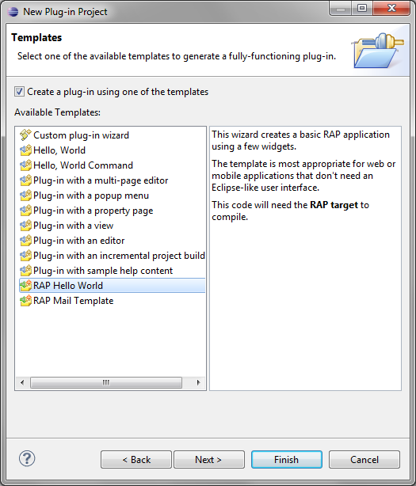

This document describes how to quickly create and launch a first user interface with RAP. A complete application includes a few more components, depending on your application setup.
First we need to create a project for your application. It is recommended to use a Plug-in Project, unless you want to write an RAP applications without OSGi. In the latter case, you can also create a plain Java Project here. (If you do so, the project setup will differ slightly from this tutorial. Most notably, you will have to add org.eclipse.rap.rwt to the java build path/ Required Projects in the next step.)
From the menu, select File > New > Plug-in Project. Let's call the plug-in org.example.rap.helloworld. In the Target Platform box, choose Eclipse version and 3.5 or greater to create a bundle that is compatible with Eclipse.

On the second page of the wizard, disable the option Generate an activator. (This option would create a bundle activator, but we don't need that now.) Ensure that the option This plug-in will make contributions to the UI is selected and that no Rich Client Application will be created.
On the next page select the RAP Hello World template.
Set the Application window title and Package name and click "Finish".

The wizard will create all needed classes for your RAP application.
Every RAP application needs an entry point class that creates the initial UI of the application.
The wizard automatically creates a class named BasicEntryPoint that extends AbstractEntryPoint in the speified package. In the method createContents, we already have some SWT code with two buttons.
public class BasicEntryPoint extends AbstractEntryPoint {
@Override
protected void createContents(Composite parent) {
parent.setLayout(new GridLayout(2, false));
Button checkbox = new Button(parent, SWT.CHECK);
checkbox.setText("Hello");
Button button = new Button(parent, SWT.PUSH);
button.setText("World");
}
}
The wizard also creates a class named BasicApplication that implements
the ApplicationConfiguration
interface. Note that if you rename this class, or move it to another package,
you must also manually rename it in the file OSGI-INF/contribution.xml.
Now we can launch this application using the generated launch configuration org.examples.rap.helloworld.launch in the project root. Select Run As > org.examples.rap.helloworld from the context menu of the launch configuration file. A browser view should open up soon afterwards and show your running application. More information on launching RAP applications can be found in the chapter Launching RAP Applications, including a section on troubleshooting. If the browser initially displays a 404 error, it can usually by fixed by a refresh (hit F5).